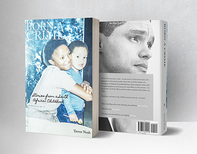
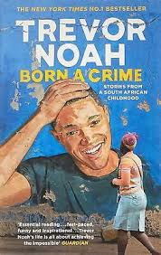
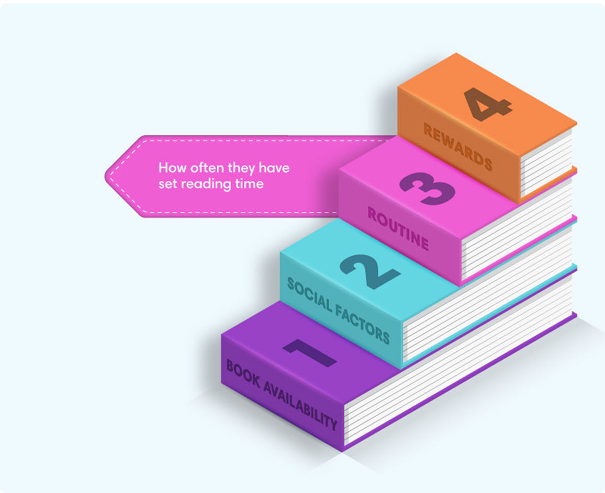

"Language brings with it an identity and a culture,
or at least the perception of it. A
shared
language
says 'We are the same.' A language barrier says
'We are different' "
Trevor Noah


When Trevor Noah was born in 1984, South Africa was still ruled by the laws of Apartheid. Apartheid was the South African government’s way of institutionalizing racism by segregating blacks and whites. The segregation was meant to impose feelings of difference between the races, including prohibiting interracial sexual relations. Being born to a black mother and a white Swiss-German father violated these laws; consequently, Trevor Noah's existence was considered a crime. Due to the law, he had to be separated from his white father.
This also put him in trouble, as he was not fully accepted by whites and did not fully belong to blacks. He felt “too white to be black, and too black to be white.” He had to be hidden from the authorities. Even though the government categorized Trevor Noah as “colored,” he didn’t fully identify with that group either, leading to a feeling of belonging nowhere. There was even a time when his grandmother did not punish him because she feared punishing a child with a white father.
Trevor’s experience of racial liminality reflects identity struggles in different areas of multiculturalism. For example, in Ethiopia, there was a war that started in 2022 and continued for three years. At that time, citizens began to differentiate between each other based on race, region, and the language they spoke. There was no freedom to move from one region to another because of race, and people were arrested for traveling to other regions.
Trevor Noah also describes in his book that he felt like an outsider while attending Sandringham School, which consisted of Indian, black, white, and Chinese students. The kids were grouped by color. Trevor Noah recounted that he was not welcomed by the colored students, as he was black. He could not be a Chinese or Indian kid. Most of his time was spent with black kids, but he could not be part of that group because they rode and walked home without him, leading to his exclusion. At the end of the day, he was all by himself. Like Trevor Noah, I felt like a stranger when I changed schools during COVID-19. Students, teachers, and administration were all new to me. I knew nobody, so I had to handle everything by myself.
Finally, Trevor finds a way to cope with the complexities of his mixed race. He learned multiple languages to adapt to different cultures, creating the perception that he belonged to various groups. He stated that language could be a powerful tool for understanding and acceptance.
